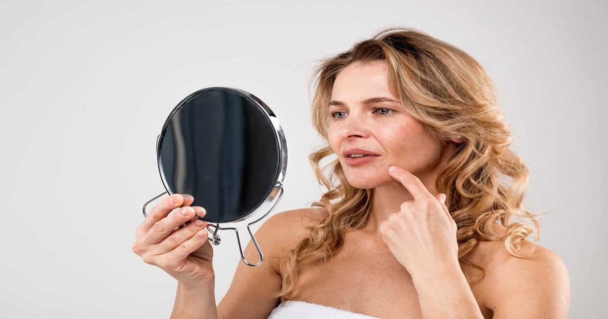

Опрос: 74% сообщают о большем интересе к эстетическому лечению на фоне изменений менопаузы
Новые данные свидетельствуют о том, что женщины нуждаются в эстетических услугах, которые понимают, как гормональные изменения влияют на их кожу и результаты лечения.